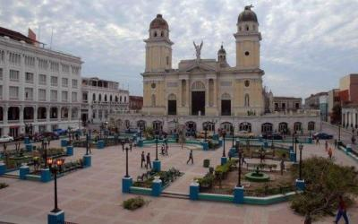
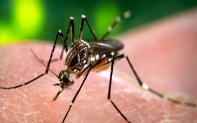

Enero
Tembló Santiago de Cuba
A principios del año 2016, la provincia de Santiago de Cuba se vio sacudida, literalmente, por varias
decenas de movimientos telúricos que resultador perceptibles. El 18 de enero de 2016, el diario Granma, publicó
su primera nota referida a los hechos, que informaba que desde el día anterior, los pobladores de la
provincia habían estado sintiendo los efectos de 12 sismos. Durante los días posteriores los movimientos
continuaron, y aunque no se sufrieron pérdidas de ninguna índole, el Oriente cubano estuvo en vilo.

Alerta de Zika en Latinoamérica
Una enfermedad transmitida por el mosquito Aedes comenzó a alertar al mundo desde el 2015.
Era el Zika. Granma publicó: "En días recientes reportes de la Organización Mundial de la Salud alertaron sobre la rápida
expansión geográfica del virus del Zika, que ya está presente en más de diez países de la región". Cuba se puso en alerta.
Su posición geográfica y su activa colaboración en países afectados por la epidemia situaban a la nación como posible blanco de la enfermedad.

IV Cumbre de la CELAC
La IV Cumbre de la Comunidad de Estados Latinoamericanos y Caribeños, CELAC, aconteció el 27 de enero de 2016 en Quito, Ecuador.
La cita resultó de gran interés mediático para Cuba y el diario Granma pormenorizó los detalles. Una de las cuestiones más relevantes
tratadas en la Cumbre fue la Declaración Especial 9: Sobre la Protección
de Migrantes en la América Latina y el Caribe. La IV Cumbre de la Celac adoptó un texto final que busca fórmulas para conservar el proceso integracionista y preservar a América Latina y el Caribe
como una Zona de Paz